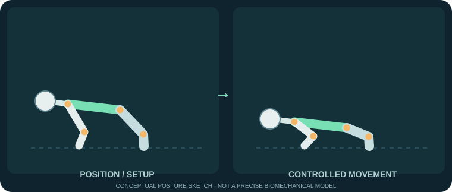

Exercise encyclopedia / Push
Knee push-up
Support knees and hands, keeping shoulders, hips and knees approximately aligned.
Movement illustration

How to perform it
- Kneel on a comfortable mat and place hands slightly ahead of shoulders.
- Align shoulders, hips and knees in a strong line.
- Lower chest toward the floor within a comfortable range.
- Press up without bending sharply at the waist.
Breathe continuously and use a range that feels controlled and comfortable for your body.
Why this movement matters
Pressing movements generally challenge the chest, shoulder and elbow extensor muscles. Which muscles contribute most changes with leverage, hand placement, range of motion and individual technique.
Progression checkpoint
Progress to shorter sets of floor push-ups or lower inclines.
Equipment and safety
Reduce pressure on painful wrists or shoulders by changing the angle, hand position or variation.
Problem solving
Common mistakes & corrections
Correction: Move trunk and hips together or use an incline.
Correction: Bring hands beneath a workable shoulder line.
Training progression
Find your next variation
This is one possible route from a lower-demand version to a more demanding version. You can switch back whenever needed; these steps are not fixed tests or guarantees.
Readiness guidance: Progress to shorter sets of floor push-ups or lower inclines.
Build a practice
Where this fits in a program
Knee push-up is a push exercise. Pair it with movements from other patterns over the training week, and choose sets or hold times you can recover from. See the Foundation program for adaptable examples; there is no universally correct repetition target.
Calisthenics Atlas editorial guide · November 2026 · Original conceptual artwork · General audience education